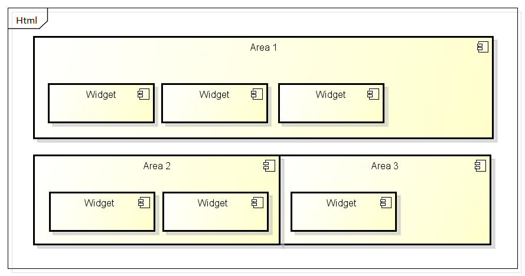
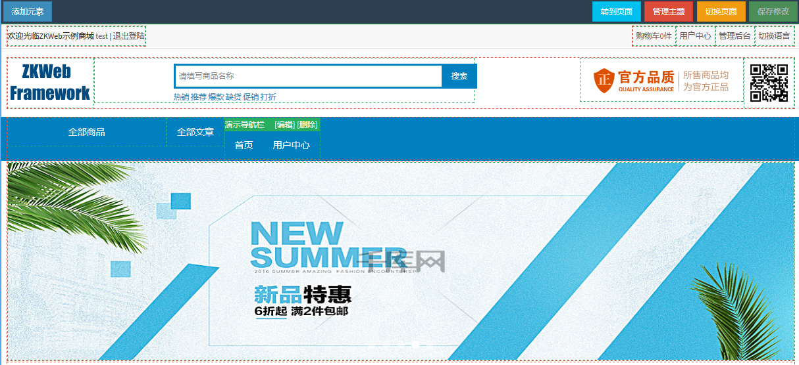

动态内容
考虑到实现可视化编辑, ZKWeb提供了一套内置的动态内容系统.
这套系统定义了以下的类型
- 区域 (area)
- 模块 (widget)
动态内容的结构图
一个Html包含多个区域(area), 一个区域包含多个模块(widget). 区域之间不能互相嵌套.

可视化编辑的效果
这是默认插件中实现的可视化编辑功能,
模块可以通过添加元素加到区域中, 也可以从区域中删除现有的模块.

使用区域
在模板中使用area标签, 可以描画注册到这个区域下的所有模块
{% area headerNavBar %}
区域下的模块列表
每个区域下都有对应的模块列表, 模块列表的查找顺序如下
App_Data\areas\{区域Id}.widgets- 程序中注册的默认模块列表
区域Id全局唯一, 请注意是否会产生冲突.
全局唯一的理由是, 有的区域（例如网站头部）是整个网站共享的,
这时只需要编辑这个区域就可以应用到所有页面.
注册模块到默认模块列表中
使用默认的插件集时, 会在头部中描画标签{% area header_menubar %},
这里演示怎样添加自定义的模块到这个区域中.
在Plugin.cs的Plugin()函数下添加以下代码:
var areaManager = Application.Ioc.Resolve<TemplateAreaManager>(); areaManager.GetArea("header_menubar").DefaultWidgets.Add("example.widgets/example_nav");
创建templates/example.widgets/example_nav.widget, 并添加以下内容
{ "Name": "Example Navbar Item" }
创建templates/example.widgets/example_nav.html, 并添加以下内容
<ul class="nav"> <li><a href="/example/template">{{ "Example" }}</a></li> </ul>
添加以后刷新页面可以看到

模块的单独缓存
模板模块支持设置单独的缓存时间和缓存策略, 使用此功能可以大幅提高页面的响应速度.
在widget文件指定缓存时间, 例如
{ "Name": "Example Navbar Item", "CacheTime": 15, "CacheBy": "Locale,Url" }
这里的CacheTime表示该模块的描画结果会缓存15秒, CacheBy表示缓存的隔离策略.
缓存策略请参考缓存处理, 这里缓存会按当前的语言和时区来隔离.
有多个缓存策略时可以用逗号分隔, 为了兼容设备专用模板, 默认会自动添加"Device"策略.
自定义模块的描绘器
描绘模板模块的逻辑可以通过继承ITemplateWidgetRenderer并注册到容器改变,
默认的描绘器实现在这个文件中
,
通过修改描绘器的逻辑可以实现更多的功能,例如描画模块时指定边框或者css规则.